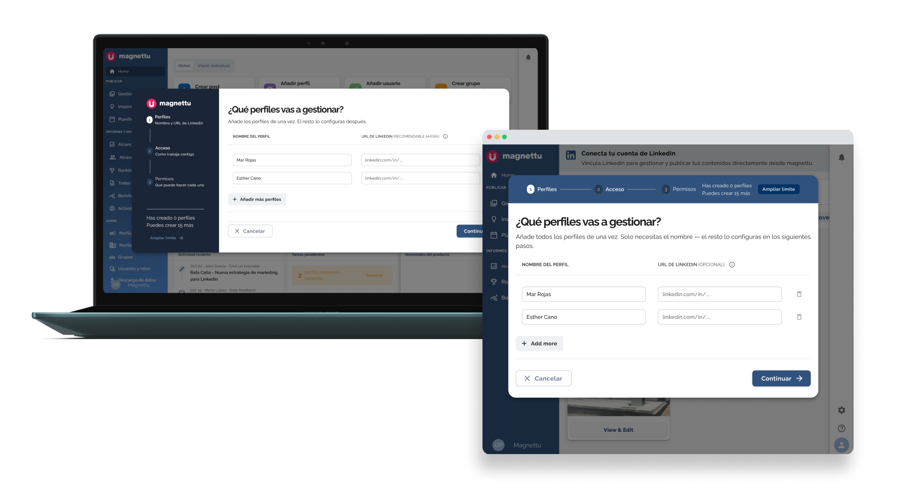
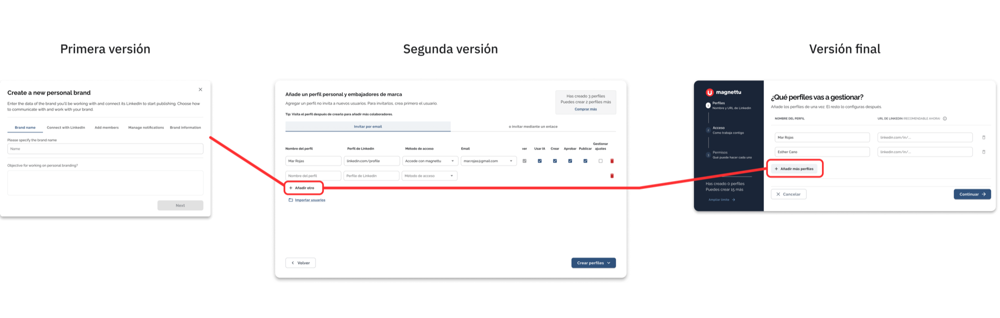
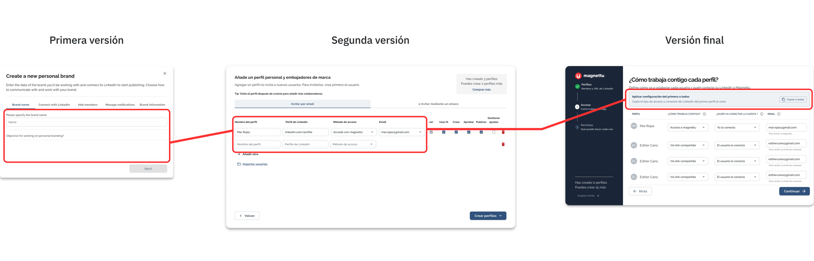
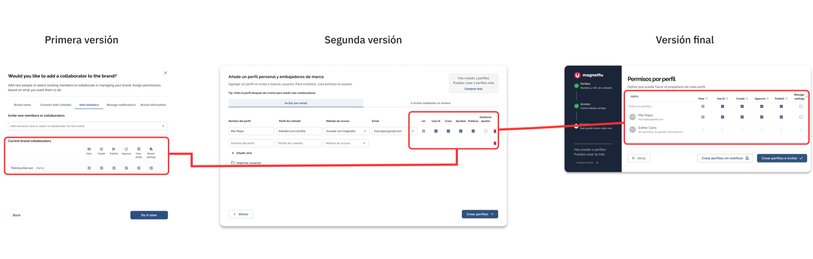
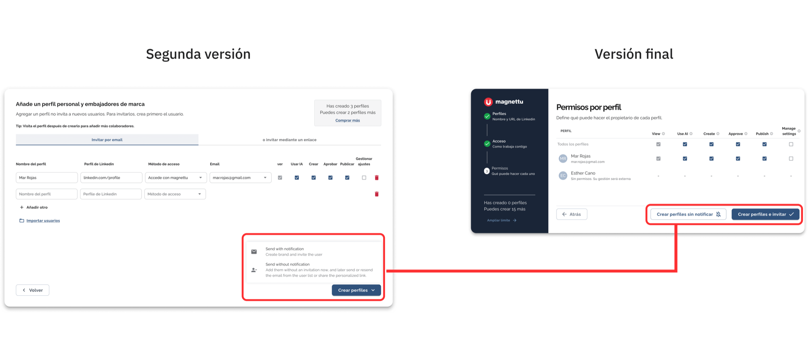
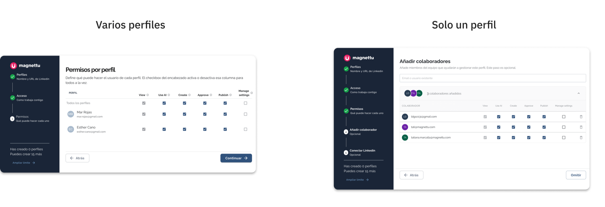

De un modal confuso a un flujo guiado
Rediseño de la creación de perfiles en Magnettu, prototipado de forma interactiva con IA.

Contexto
Cuando entré en Magnettu, la plataforma aún no tenía ningún apartado pensado para agencias. Con el tiempo, la empresa pivotó hacia ese sector, y con eso llegó la necesidad de gestionar perfiles, usuarios y grupos, algo que hasta entonces no existía como tal.
La primera solución, diseñada por otra diseñadora del equipo sobre la que yo luego iteré, se llamó "Grupos y Miembros": un único espacio que mezclaba usuarios, perfiles y grupos sin distinción clara. Funcionaba, pero generaba confusión constante en el día a día.
(No conservé una captura de esta versión original, por eso no hay imagen aquí)
El problema
El primer paso no fue separar, sino consolidar: agrupé todo bajo Marcas Personales, un nombre y espacio común, aunque seguía mezclando perfiles personales, de empresa y grupos. Para entender qué necesitaba una agencia real, hicimos varias sesiones de research directo con una que ya usaba la herramienta.
El reto de fondo:
- Magnettu servía tanto a agencias (colaboración con clientes) como a departamentos de marketing con programas de employee advocacy.
- Para una agencia, el email del propietario era imprescindible. Para advocacy interno, pedirlo como obligatorio no tenía sentido.
- Intentar simplificar el flujo para ambos casos generó fricción constante con cada caso de uso nuevo.
Fue más adelante, en V2, cuando finalmente separé perfiles personales, perfiles de empresa y grupos en sus propias secciones.
Patrón observado en Datadog durante el uso del flujo anterior. Representación ilustrativa, sin cifras exactas disponibles.
Evolución del flujo, y por qué cada versión se quedaba corta
A partir de ese research, el flujo de creación de perfiles pasó por varias versiones:
4 tabs: nombre, objetivos, LinkedIn y permisos
El flujo pedía nombre de la marca, objetivos, conectar LinkedIn (opcional) e invitar usuarios con permisos, todo dividido en 4 pestañas.
- No se entendía cuándo había que meter el email del propietario de la marca.
- Muchos managers decían "lo haré después" y se olvidaban, dejando el perfil a medio configurar.
Todo en un solo modal, con reorganización de fondo
Nombre del perfil, URL de LinkedIn obligatoria, cómo se conectaría y permisos, todo en una sola pantalla. Esta versión también reorganizó la estructura: "marcas" pasó a llamarse "perfiles personales", los grupos se separaron en su propia sección, y perfiles personales y perfiles de empresa quedaron cada uno en su propio apartado para que no se confundieran entre sí.
- Seguía sin entenderse por qué pedíamos cierta información.
- Algunos no querían añadir 50 marcas de golpe.
- Al ser la URL de LinkedIn obligatoria, muchos managers acababan pidiéndonos a nosotros mismos que creáramos los perfiles.
Después de tres intentos que no terminaban de resolver el problema de fondo, rediseñé el flujo desde cero.
Mi rediseño
Rediseñé el flujo en 3 pasos separados en lugar de un único modal, con el objetivo de que la persona entendiera por qué se le pedía cada dato, no solo qué dato rellenar.
La pregunta clave del rediseño: ¿quién va a conectar LinkedIn?
Con tres opciones: la conecto yo · la conecta el propietario · aún sin definir
Esto resolvía un problema muy concreto: los managers pedían a los propietarios que conectaran su cuenta manualmente, pero se olvidaban, porque implicaba entrar en Magnettu y hacerlo ellos mismos. Ahora, si el manager elige "la conecta el propietario", este recibe automáticamente un email de invitación, quitando ese paso manual del medio.

El flujo completo, de principio a fin
Toda la lógica condicional del rediseño, en un solo vistazo.
Explora el flujo completo directamente en Figma.
Cómo fue evolucionando
Algunas de las decisiones de este rediseño no son evidentes solo mirando las pantallas, así que las desgloso una por una.
El primer paso del rediseño no fue añadir algo nuevo, sino quitar fricción de lo que ya existía.
- Primera versión: el flujo tenía 5 pasos, empezando por el nombre de la marca y el objetivo, separados sin una prioridad real de qué información pedir antes.
- Versión final: unifiqué esos pasos en uno solo.
Al no ver toda la información de golpe, muchas personas decían "ya lo haré más tarde" y ese paso quedaba sin completar para siempre. Unificarlo resolvió justo eso.

Esta decisión no siempre se nota a simple vista, pero fue clave para el día a día de los managers que gestionaban muchos perfiles a la vez.
- Primera versión: solo se podía crear un perfil a la vez.
- Segunda versión: se añadió la opción de crear varios perfiles de golpe, con el copy "Añadir otro".
- Versión final: se mantuvo la opción, con el copy actualizado a "Añadir más perfiles".
Aunque el copy cambió poco entre versiones, la funcionalidad se volvió indispensable a medida que crecían los clientes con equipos grandes.

Esta fue de las decisiones más delicadas del rediseño, porque tocaba directamente el problema de fondo: quién debía conectar LinkedIn y cuándo pedir cada dato.
- Primera versión: pedía nombre de perfil y objetivo. Se quitó el objetivo porque muchas personas no tenían uno claro, solo querían crear el perfil.
- Segunda versión: se añadió la URL de LinkedIn, el método de acceso y el email, este último condicionado al método elegido.
- Versión final: se mantuvo el nombre de perfil sin poder editarlo en este paso, se añadió la pregunta "¿quién va a conectar la cuenta?" (con tres opciones: la conecto yo, la conecta el propietario, o aún sin definir), y un botón para aplicar la configuración de la primera fila a todos los perfiles creados a la vez.
La pregunta sobre quién conecta la cuenta terminó siendo el cambio más importante de todo el flujo, resolvía el motivo real por el que los propietarios nunca conectaban su LinkedIn.

Los permisos parecen un detalle técnico, pero fue una de las partes donde más iteramos, porque afectaba directamente a si alguien podía entrar a trabajar en su perfil o no.
- Primera versión: colaboradores y permisos eran pasos separados. Muchos creían que colaboradores era opcional, lo dejaban para después y se olvidaban.
- Segunda versión: se unificó todo en una sola línea, más visible, manteniendo los checkboxes por ser rápidos de leer.
- Versión final: permisos pasó a ser el último paso, se mantuvieron los checkboxes, se ocultan (con un guion) los permisos que no aplican si el perfil no tiene acceso a Magnettu, y se añadieron tooltips explicando qué incluye cada permiso.
Los tooltips fueron una solución simple para un problema real: la gente no siempre entiende qué significa cada permiso, y preferimos explicarlo ahí mismo antes que en documentación aparte.

Esta decisión fue casi lo contrario a las demás: en vez de añadir más control, decidimos quitarlo.
- Versión anterior: al terminar de crear un perfil aparecía un desplegable con dos opciones, enviar con notificación o sin ella.
- Versión final: se eliminó esa decisión explícita porque generaba dudas. Se compensó con un tooltip explicativo secundario, en vez del texto primario de antes.
A veces menos opciones generan más confianza que más opciones, aquí funcionó así.

El flujo no se comporta igual según cuántos perfiles estés creando, y esa diferencia fue intencional.
Cuando se crea un único perfil, el flujo incluye dos pasos extra, Colaboradores y LinkedIn, que acompañan el onboarding completo de esa persona en el mismo momento. Cuando se crean varios perfiles a la vez, en cambio, el flujo se detiene en permisos, repetir colaboradores y conexión de LinkedIn uno a uno para 5 o 10 perfiles sería tedioso, así que esa configuración se deja para hacerla perfil por perfil, más adelante.
Es una decisión pensada para no forzar el mismo nivel de detalle cuando el contexto de uso es completamente distinto.

Prueba el flujo completo
Nota: este prototipo es una representación del diseño para mostrar la lógica del flujo, no una réplica exacta al cien por cien del producto real.
- Partí de capturas estáticas de Figma y las convertí en un prototipo interactivo usando Claude, en lugar de maquetar pantalla por pantalla manualmente como en versiones anteriores.
- Le di a Claude un brief detallado: contexto del producto, objetivo del flujo y restricciones.
- A partir de ahí iteraba con Claude: testeaba el prototipo con usuarios reales, traía el feedback, y ajustaba el flujo en la siguiente ronda.
- Resultado: esto redujo drásticamente el tiempo de iteración frente a maquetar cada pantalla a mano, y el feedback que obtuve de los usuarios fue mucho más profundo, probaban un flujo real, con lógica real, no un mockup estático.
Un detalle del rediseño: el modal de invitación
Cuando el manager elige que sea el propietario quien conecte LinkedIn, este recibe un modal de invitación. Fue la pieza que llevé un paso más allá del prototipo, directamente a código.
- Diseñé la pantalla en Figma y le pedí a Claude que la convirtiera en HTML implementable casi tal cual.
- Para que el traspaso funcionara, entré en el código real de la app con Claude Code y Cursor, reutilizando componentes ya existentes.
- Todo esto ocurrió en paralelo a una actualización del design system que estaba en curso, así que el desarrollador recibió un componente ya alineado con los patrones nuevos, listo para integrar sin retrabajo.

Este flujo tiene, en realidad, dos versiones, según dónde vive el formulario cuando la persona lo completa, no según quién creó el perfil:
- Contexto A · Por email. El propietario llega desde el enlace de invitación sin sesión iniciada en Magnettu. Ve una página standalone donde completar la URL y conectar LinkedIn es obligatorio, no existe la opción de "hacerlo más tarde".
- Contexto B · Dentro de Magnettu. El propietario ya tiene sesión activa. Ve el mismo flujo como un modal flotando sobre el dashboard, con la opción de posponer siempre disponible, y que se cierra solo al conectar o al posponer.
Hola, Mar Rojas
Has sido invitado a unirte a Magnettu. Para completar tu perfil, por favor vincula tu cuenta de LinkedIn.
Mockup de validación — no es el componente final de producción
Nota: representación del diseño, no réplica exacta del producto real.
Resultado
La versión final lleva unas semanas en producción. Los datos cuantitativos fueron poco concluyentes (solo una semana de datos reales), así que la validación vino sobre todo de sesiones reales grabadas en Datadog, viendo cómo los brand managers usaban el flujo.
Lo que se observó:
- Menos fricción al crear marcas. Los managers dejaron de pedirnos que creáramos los perfiles por ellos, y en llamadas de venta con agencias ya no surgían tantas dudas sobre este paso.
- Mejor entendimiento del formulario. Campos que antes se dejaban vacíos por no saber para qué servían, ahora se completan.
- La URL de LinkedIn sigue siendo el mayor punto de fricción, pero al ser opcional en este paso, ya no bloquea la creación del perfil como pasaba en la V3.
- Detecté un problema de contraste en algunos textos durante las sesiones, pendiente de ajustar en la siguiente iteración.
Patrón observado desde el lanzamiento. Representación ilustrativa, sin cifras exactas disponibles.
Aprendizajes
- Sin datos cuantitativos sólidos, observar sesiones reales de uso puede ser una fuente de validación igual de valiosa para detectar patrones de comportamiento.
- Resolver un problema de fondo, en este caso, quién conecta LinkedIn, tiene efecto más allá de la UI: se nota en ventas y en cuánto soporte manual necesita el equipo.